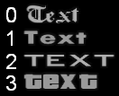
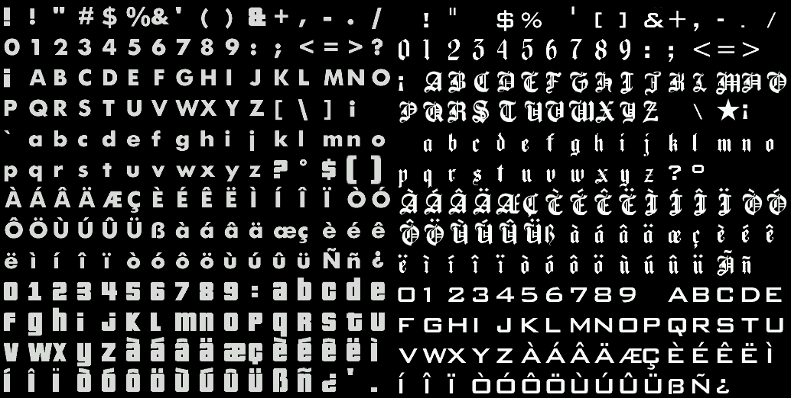

PlayerTextDrawFont
From SA-MP Wiki
| This feature (player-textdraws) was added in SA-MP 0.3e and will not work in earlier versions! |
Description:
Change the font of a player-textdraw.
(playerid, PlayerText:text, font)
| playerid | The ID of the player whose player-textdraw to change the font of |
| text | The ID of the player-textdraw to change the font of |
| font | There are four font styles as shown below. A font value greater than 3 does not display, and anything greater than 16 crashes the client.
Available Fonts:  |
}}
Return Values:
This function does not return any specific values.
Example Usage:
new PlayerText:welcomeText[MAX_PLAYERS]; public OnPlayerConnect(playerid) { // First, create the textdraw welcomeText[playerid] = CreatePlayerTextDraw(playerid, 240.0, 580.0, "Welcome to my SA-MP server"); // Set the font of player-textdraw 'welcomeText' to 2. PlayerTextDrawFont(playerid, welcomeText[playerid], 2);
[edit]
Related Functions
The following functions may be helpful as they relate to this function in one way or another.
- CreatePlayerTextDraw: Create a player-textdraw.
- PlayerTextDrawDestroy: Destroy a player-textdraw.
- PlayerTextDrawColor: Set the color of the text in a player-textdraw.
- PlayerTextDrawBoxColor: Set the color of a player-textdraw's box.
- PlayerTextDrawBackgroundColor: Set the background color of a player-textdraw.
- PlayerTextDrawAlignment: Set the alignment of a player-textdraw.
- PlayerTextDrawLetterSize: Set the letter size of the text in a player-textdraw.
- PlayerTextDrawTextSize: Set the size of a player-textdraw box (or clickable area for PlayerTextDrawSetSelectable).
- PlayerTextDrawSetOutline: Toggle the outline on a player-textdraw.
- PlayerTextDrawSetShadow: Set the shadow on a player-textdraw.
- PlayerTextDrawSetProportional: Scale the text spacing in a player-textdraw to a proportional ratio.
- PlayerTextDrawUseBox: Toggle the box on a player-textdraw.
- PlayerTextDrawSetString: Set the text of a player-textdraw.
- PlayerTextDrawShow: Show a player-textdraw.
- PlayerTextDrawHide: Hide a player-textdraw.

{kind=link}
{kind=link}